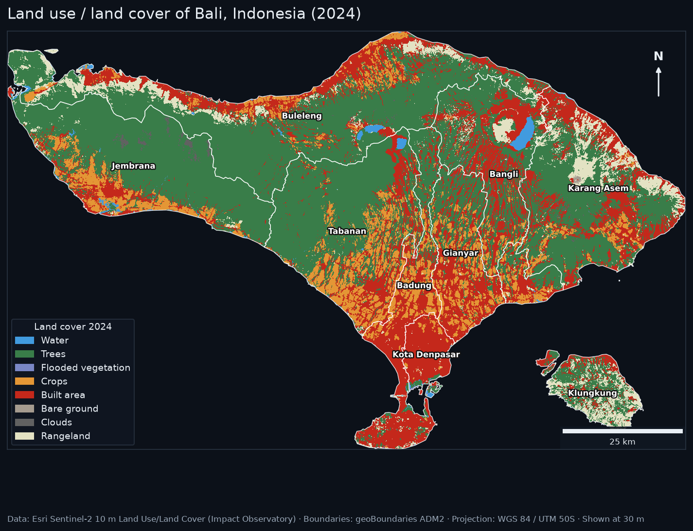
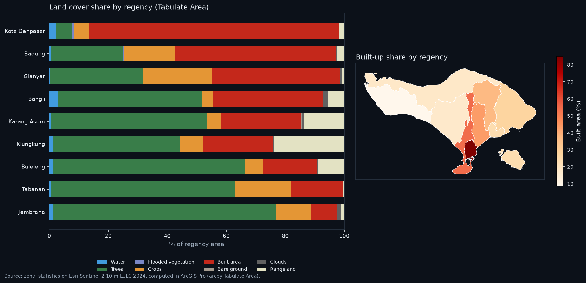

CASE STUDY · REMOTE SENSING · ZONAL ANALYSIS
Land cover by regency:
Bali, 2024.
How much of each Bali regency is forest, cropland or built-up land? An automated ArcGIS Pro workflow turns Sentinel-2 land-cover tiles into a per-regency table, a styled map and a summary, in a single script run.

Question
Bali's land cover varies sharply between the urban south and the forested west and north. The goal was a repeatable, regency-level breakdown of land cover, in hectares and percent of area, that can be rerun for any year.
Data
Land cover: Esri Living Atlas Sentinel-2 10 m Land Use/Land Cover (2024), exported as raw class values in WGS 84 / UTM zone 50S. Zones: geoBoundaries ADM2 boundaries for Indonesia, filtered to Bali's nine regencies.
Method
1. Zones. Convert the ADM2 GeoJSON, select the Bali regencies and project them to UTM 50S.
2. Land cover. Mosaic the 12 downloaded tiles at 10 m, extract by the regency mask, build the attribute table and apply the standard class colour map.
3. Zonal analysis. Run Tabulate Area (Spatial Analyst) by regency, then compute hectares and percentage for each class and write them onto a copy of the regency polygons.
4. Output. Create a new map with a graduated-colour regency layer and print a summary table. The whole workflow is one arcpy script.
Results
Across 559,051 ha, trees cover 55.3% of Bali, built area 25.8%, crops 10.6% and rangeland 6.6%. Kota Denpasar is 84.9% built-up and Badung 54.6%. Jembrana (75.8% trees), Buleleng (65.3%) and Tabanan (62.2%) remain the most forested regencies. Klungkung, which includes the Nusa Penida islands, has the largest rangeland share (23.7%).

Limitations
The land-cover product is a modelled global classification, so class accuracy varies locally. In the source product, "built area" includes scattered settlements and roads, which can raise its share in densely settled agricultural regencies. A small share of each regency is masked as cloud.